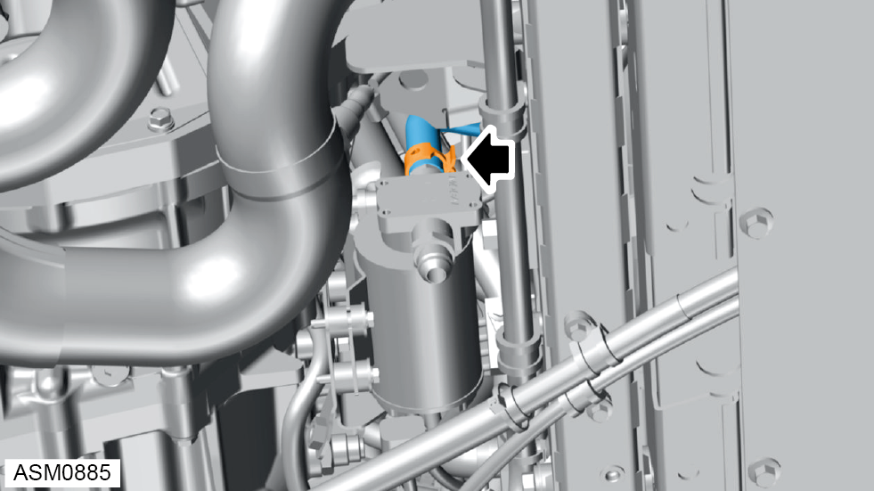
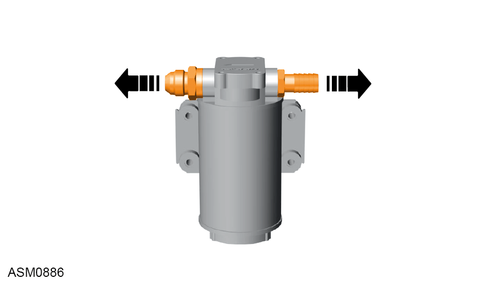

Oil Pump - V6
Print
Operation Code: 46.09.05-02
Removal
- Remove transmission filter and check valve assembly. Refer to procedure.

- Disengage hose clamp securing hose to oil pump.
- Remove hose from oil pump.
- Remove M5x30 bolts and washers (x4) securing oil pump to bracket. Torque 3 Nm.
NOTE: Always record quantity and fitted position of washers.
- Remove oil pump.
Do not carry out further disassembly if removing for access only.

- Remove hose fittings (x2) from oil pump.
Installation
- Installation is the reverse of removal procedure except for the following:
- Check and adjust the transmission oil level as required. Refer to procedure.
- Activate oil pump for 30 seconds using Lotus Insight tool.
- Check and adjust the transmission oil level as required. Refer to procedure.